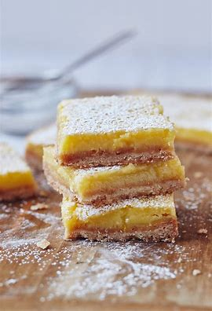

Lemon Bars

Ingredients
Switch to Steps
-
1/2 cup Powdered Sugar
-
1 1/2 cup Flour
-
1/2 tsp Salt
-
3/4 cup Butter
-
4 Eggs
-
1 1/2 cup Sugar
-
1/2 cup Freshly Squeezed Lemon Juice
-
3/4 cup Whipping Cream
-
3 Lemons
Steps
Switch to Ingredients
-
Preheat oven to 325F.
-
Grease 13"x9" baking pan.
-
Sift the powdered sugar, flour and salt into a bowl.
-
With a pastry blender, cut in the butter until mixture resembles coarse crumbs.
-
Press the mixture into the bottom of the prepared pan.
-
Bake until golden brown, about 20 minutes.
-
Meanwhile prepare lemon rind.
-
Then, for the topping, whisk the eggs and sugar together until blended.
-
Add the lemon rind and juice and mix well.
-
Lightly whip the cream and fold into the egg mixture.
-
Pour over the still warm crust, return to the oven and bake until set, about 40 minutes.
-
Cool completely before cutting into bars.
-
Dust with powdered sugar.